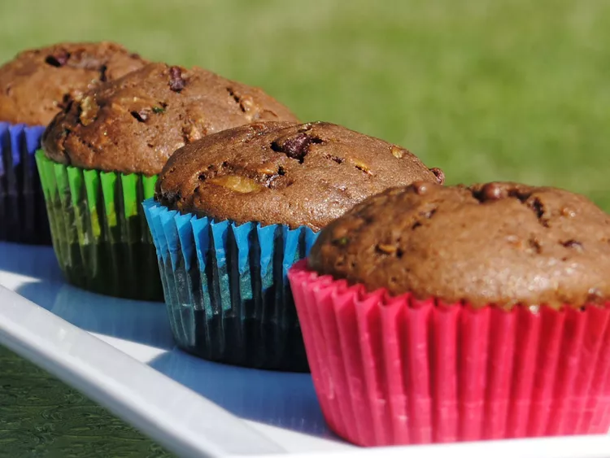

Chocolate Zucchini Muffins

These chocolate zucchini muffins are a wonderful way to use the extra bounty of summer, and make a tasty treat. You can adjust the recipe to suit your family's tastes, or create your own variations.
Ingredients:
- 3 eggs
- 2 cups white sugar
- 1 cup vegetable oil
- ⅓ cup unsweetened cocoa powder
- 1 ½ teaspoons vanilla extract
- 2 cups grated zucchini
- 3 cups all-purpose flour
- 1 teaspoon baking soda
- 1 teaspoon salt
- ½ teaspoon baking powder
- ¼ teaspoon ground cinnamon
- ¼ teaspoon ground nutmeg
- ¼ teaspoon ground cloves
- ¼ teaspoon ground cardamom
Steps:
- Preheat the oven to 350 degrees F (175 degrees C). Grease two 12-cup muffin tins or line cups with paper liners.
- Whisk eggs in a large bowl until smooth. Add sugar, oil, cocoa, and vanilla; whisk until well blended. Stir in zucchini. Add flour, baking soda, salt, baking powder, cinnamon, nutmeg, cloves, and cardamom; mix until just moist.
- Spoon batter into the prepared muffin cups, filling each 2/3 full. Bake in the preheated oven until tops spring back when lightly pressed, about 20 to 25 minutes. Transfer to a wire rack to cool completely; store loosely covered.
Tips
For an optional topping, use any, all, or a combination of the following: equal parts brown sugar, chopped nuts, and mini chocolate chips. Sprinkle on top of the muffins just before baking.